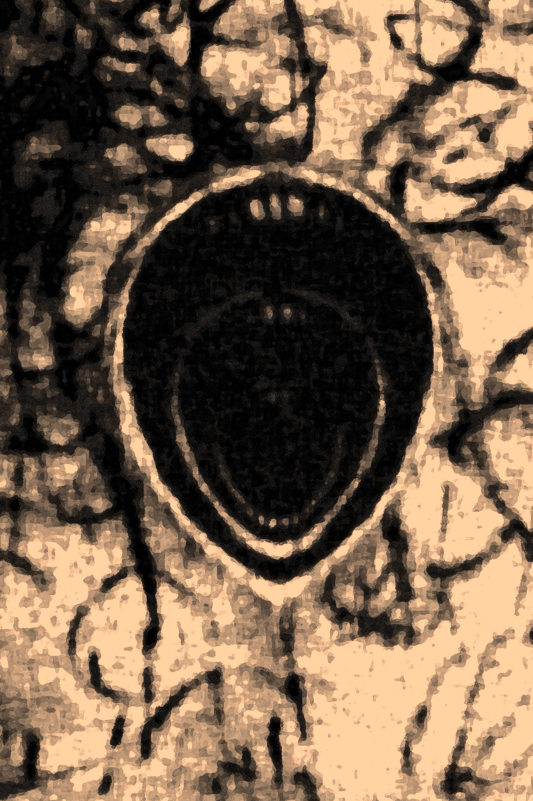
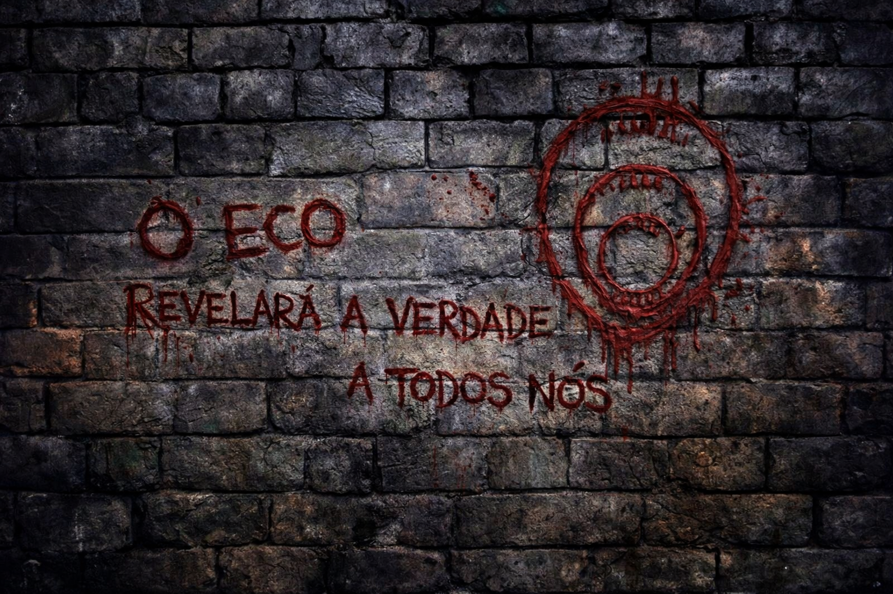

Fragmento de Influência Angelical

Algo incompleto, instável e perigoso.
O Eco

Todas as crianças na vila tiefling desenharam o mesmo símbolo antes de desaparecerem.
Aya:
“Um texto no templo de Alberon chamava isso de alinhamento forçado com esse mesmo símbolo”“Não era um ritual. Era uma… condição”

Templo de Alberon, na parede:
"O Eco revelará a verdade a todos nós"